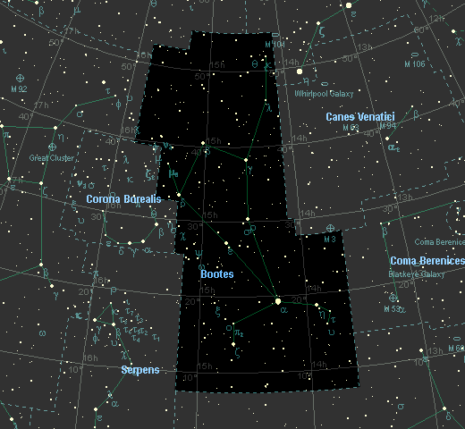

仙女座(Andromeda)传说古时埃塞俄比亚国王克甫斯和王后卡西奥珀亚生有一个美丽的公主安德洛墨达。王后常夸耀她的女儿比海王波赛东的女儿还美。这句话激怒了海王，于是海王便派鲸鱼怪到国王统治的地方，兴风作浪残害百姓。后来国王得到神的启示，为了拯救百姓，只能把公主用锁链锁在海边岩石上，以供奉鲸鱼怪。正当在这危急时刻，英雄珀尔修斯骑着飞马路过这里，救下了公主并与她结了婚。后来，公主被神提升到天上成为仙女座。 |
 |
牧夫座(Bootes)传说天后赫拉看到化成大熊和小熊的美女卡利斯托和她的儿子阿卡斯被天神宙斯提升到天界，占据着两个荣耀宝座——大熊座和小熊座后，心中非常嫉妒。于是就叫海王永远不让大熊座和小熊座沉到地平线下去休息外，还加派了一个忠实的猎人带着两只猎犬，紧紧地在两只熊的后面追赶。这个猎人就是牧夫座。 |
行星撞地球恐龙如何灭绝？科学家还原6500万年前陨石撞地球24小时细节 |
46P彗星来了！有望肉眼看到，视直径可能达满月两倍当你读到本文的时候，一颗黯淡的小彗星正朝我们靠近。它将于12月中旬到达近地点，亮度也将达到近400年来最亮。 |
行星撞地球详细解读二十八星宿对应十二地支图 |
关于天体运动的和地心说相对立的学说哥白尼提出的"日心说"，有力地打破了长期以来居于宗教统治地位的"地心说"，实现了天文学的根本变革。 |
|
|
|
|